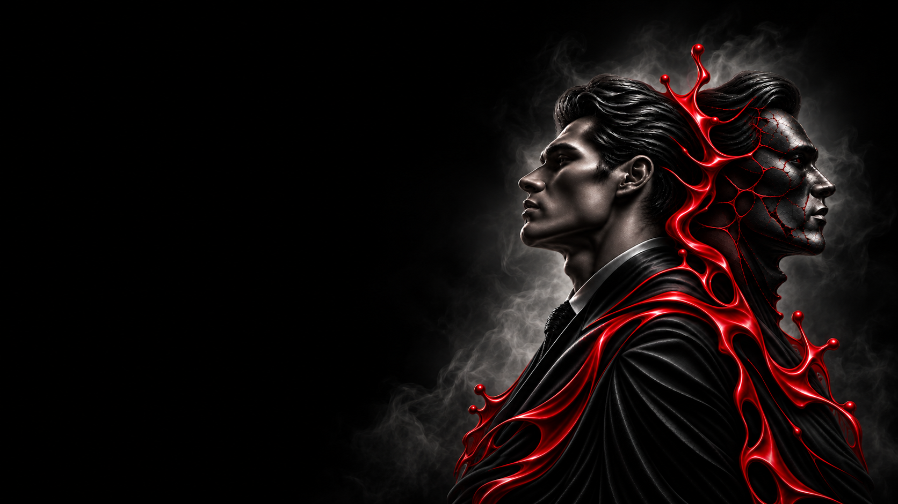

БЕЗ СТОРОНЫ · КОПИРУЮЩАЯ
ДВОЙНИК
ОДНА НОЧЬ.
НОВАЯ ЛИЧНОСТЬ.
Определяется после первой ночи
Трансформирующаяся · Копирующая
Перевоплощение — после завершения первой ночи Двойник выбирает одну из ролей погибших игроков, копирует её и продолжает игру уже с её стороной, целью и способностями.
Двойник начинает игру без постоянной стороны и собственной активной способности. После смертей первой ночи ведущий будит его и предлагает выбрать одну из ролей выбывших игроков. С этого момента Двойник полностью принимает выбранную роль и продолжает игру уже в новом качестве.
Если в первую ночь погиб только один игрок, Двойник автоматически получает его роль. После перевоплощения выбор изменить нельзя — Двойник получает сторону и способности скопированной роли.
Если у тебя есть выбор, оценивай не только силу роли, но и ситуацию за столом. Правильное перевоплощение может дать тебе сильную позицию, а неправильное — поставить на сторону команды, у которой почти не осталось шансов.